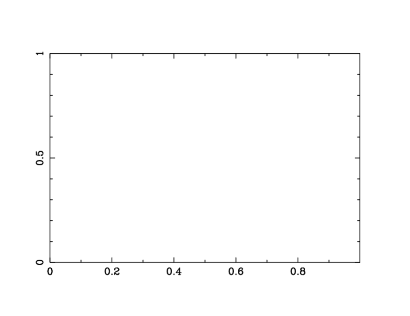

One-line summary:
Make an 8-bit color PNG with width 800 pixels and add this line in the POD:
=for html <img src="path_to_image/image.png">
Longer explanation:
Images for HTML and PDF generation should come from the single PNG image
with 8 bit color and a width of 800 pixels. The PNG should be 8
bit-color as reported by running the file image.png command in unix.
The height can be unconstrained.
Only the HTML code should be added in a POD document - I have a script
that will automatically add the correct code for a PDF image
afterwards. This is done because podchecker complains about the POD
code for the PDF image.
Here are the images ex_env1.png and ex_env1.8.png:
Now I'm trying the WIDTH parameter in the HTML code so that if this works, we can use the 800 pixel image and scale it down for this HTML.
Here's the unscaled version:
Here's a version scaled to width=200:
Excellent! This works for Safari, Chrome and Firefox. I'll keep this in then.
This should have one size picture in HTML and another in the PDF document.
Now trying logo2.png in the current directory for the PDF:
O<logo2.png>
It should be above this line.
The problem is that the O < tag is marked as an error in podchecker. There's no solution for this at the moment.